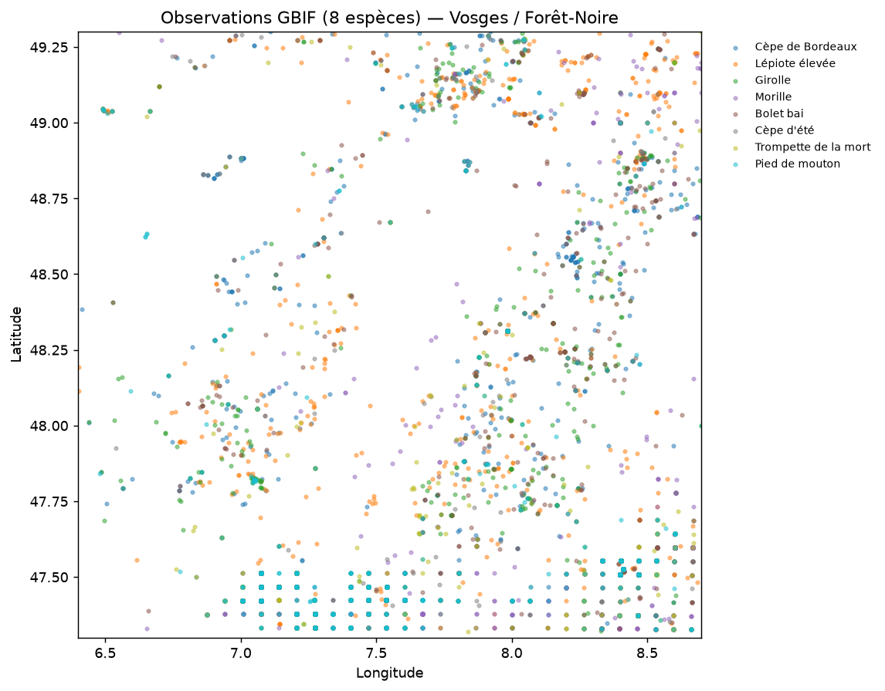
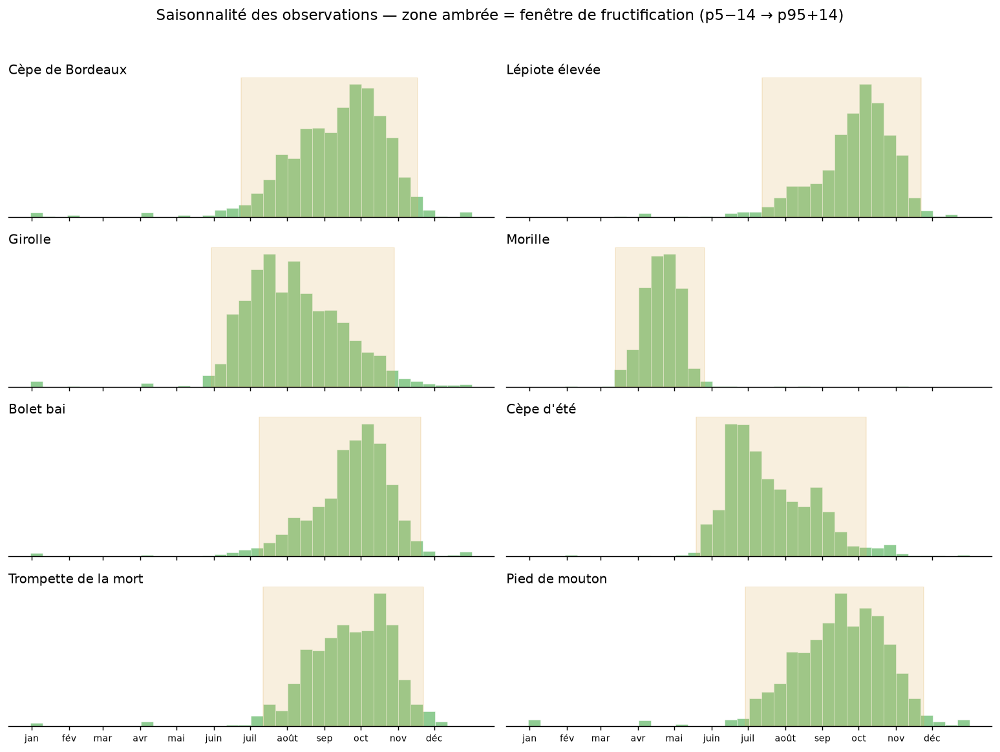
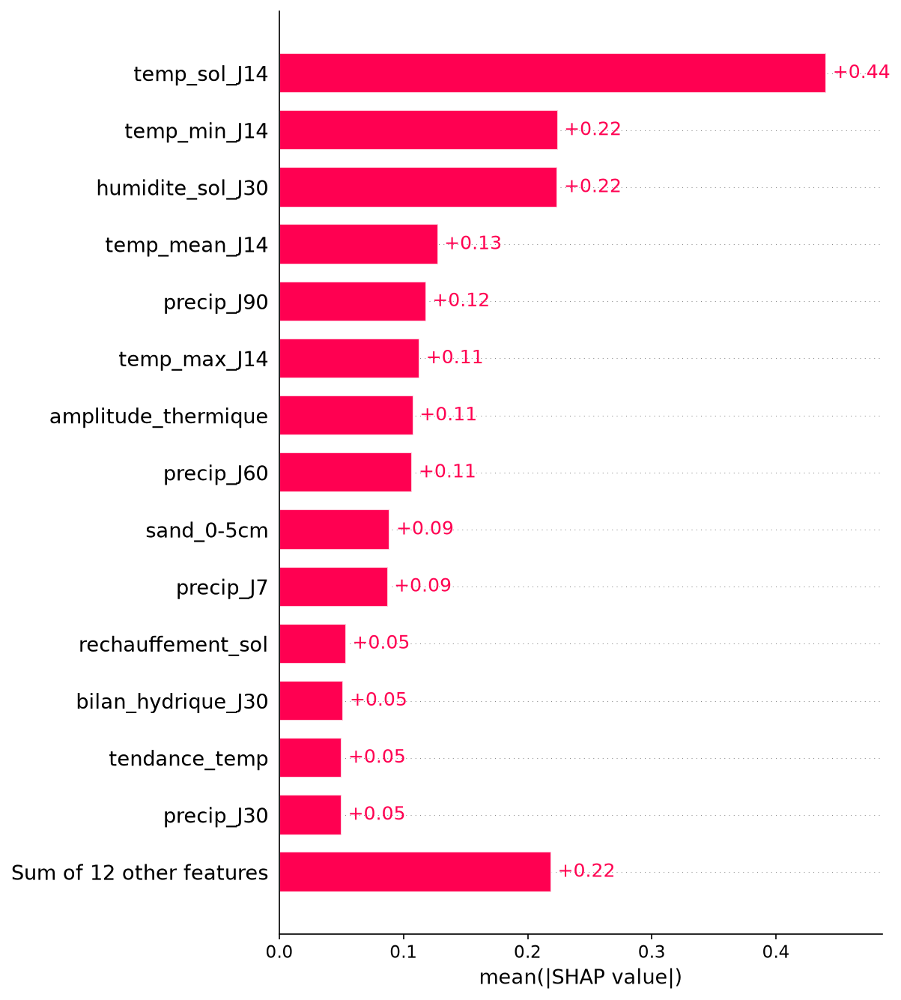
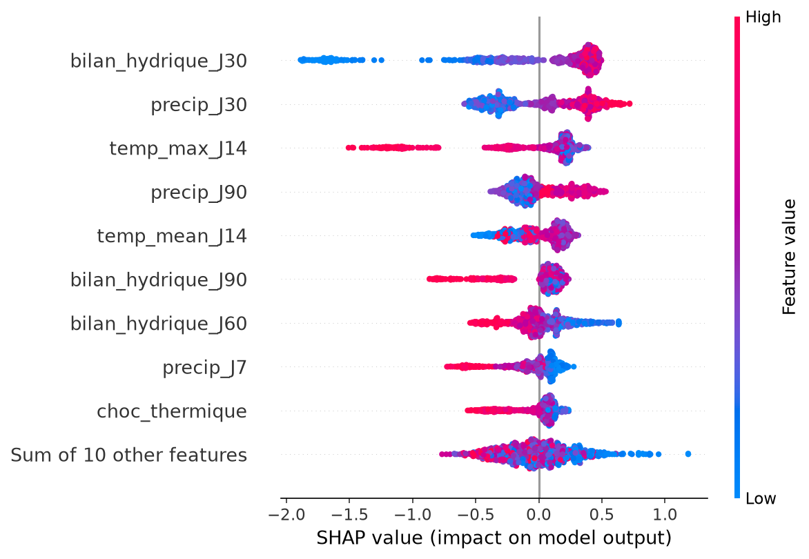
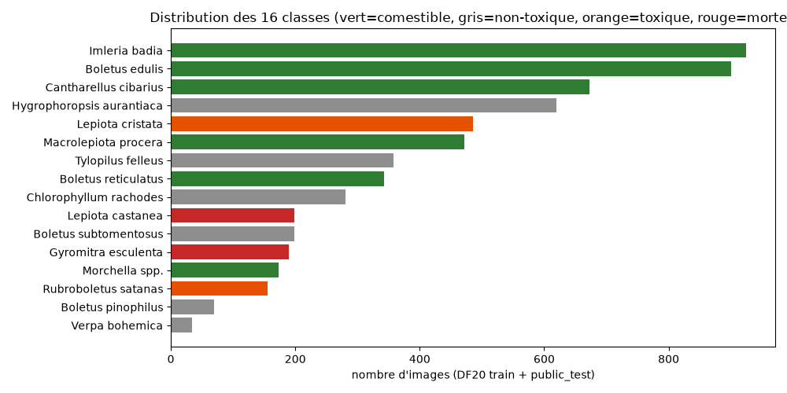
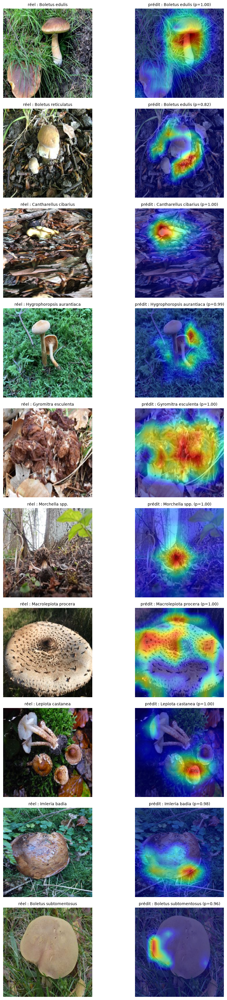
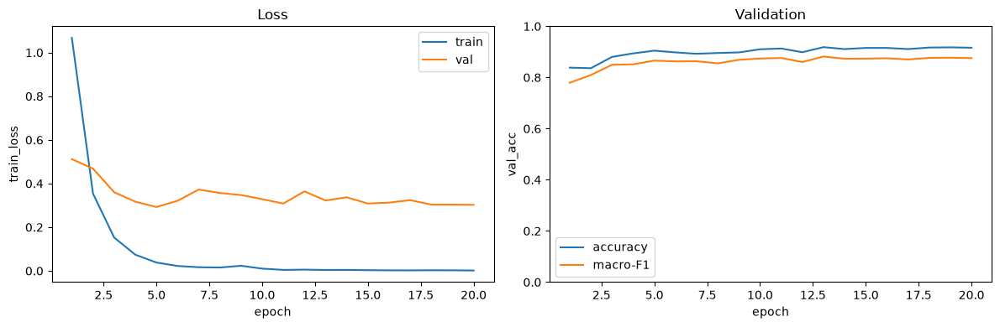

Projet de fin de formation — AI Engineer
ChampiQuest
Prévision de pousse de champignons & reconnaissance visuelle
1 · Météo → pousse
2 · Vision (20 espèces)
3 · API + carte
Objectifs & périmètre
- Prédire quand & où un champignon va fructifier (météo → probabilité de pousse).
- Reconnaître l'espèce à partir d'une photo — en privilégiant la sécurité du cueilleur.
- Rendre les modèles utilisables : API, carte interactive, page de démo.
3 semaines
- Semaine 1 — partie 1 : prédiction météo → pousse (8 espèces, LightGBM).
- Semaine 2 — partie 2 : reconnaissance d'espèce par image (20 classes, ConvNeXt).
- Semaine 3 — FastAPI, carte journalière, Docker + CI/CD, préparation soutenance.
Vue d'ensemble
GBIF
présences (8 espèces)
Open-Meteo
ERA5 + forecast
↓
pseudo-absences « effort prouvé » + 13 features
LightGBM × 8
pousse (partie 1)
ConvNeXt
vision · 20 classes (partie 2)
↓
FastAPI
/identify · /growth · /map
3 briques de données → 2 familles de modèles → 1 API + carte. C'est le fil rouge de toute la soutenance.
Données (partie 1 — pousse)
Observations
- GBIF : présences uniquement (espèce, date, coordonnées).
- Précision des coordonnées ≈ 0,5–1 km (souvent floutées).
- 8 espèces cibles (cèpes, girolle, morille, trompette, pied de mouton…).
Contexte environnemental
- Météo : Open-Meteo (ERA5 réanalyse + forecast).
- Sol : SoilGrids (sable, pH, argile…) + altitude/relief.
- Occupation du sol : Corine Land Cover.

Observations GBIF (8 espèces) — zone d'étude.
Exploration (partie 1)

Saisonnalité des observations — la morille est la seule espèce de printemps, les autres fructifient en été/automne.
Ce graphique justifie deux choix : (1) les fenêtres de saison par espèce, (2) la feature day_of_year (+0.05 AUC).
Le problème des absences
Les données GBIF ne contiennent que des présences : « champignon vu ». Pour apprendre
« quand il ne pousse pas », il faut fabriquer des négatifs honnêtes.
- Effort prouvé : un autre champignon a été vu au même endroit, le même jour, sans notre cible → c'est un vrai négatif (on a regardé, pas trouvé).
- Buffer ±3 jours : un carpophore persiste plusieurs jours → pas de fausse absence autour d'une présence.
- Fenêtre de fructification : les absences sont tirées dans la saison de l'espèce (morille : mars–mai, jamais en septembre).
→ chaque négatif encode « présence d'effort + absence de l'espèce », pas « personne n'est sorti ».
Feature engineering (partie 1)
- Fenêtres météo : pluie J7/J30/J90, bilan hydrique (pluie − évapotranspiration), choc/tendance thermique, température du sol.
- Proxies de co-fructification : des espèces très corrélées à la cible sont ajoutées comme présences à l'entraînement (combat le manque de données, sans fuite : la localisation n'est jamais une feature).
- Élagage data-driven : corrélations + SHAP → 13 features retenues (redondances et features mortes éliminées).
- day_of_year : phénologie intra-saison (début vs plein vs fin de saison) — +0.05 AUC.
Modélisation (partie 1)
- Un LightGBM par espèce (config simple : 50 arbres, 7 feuilles, profondeur 4).
- Baseline : régression logistique (pour montrer l'apport du gradient boosting).
- Évaluation : LOOCV par année — on entraîne sur toutes les années sauf une, on prédit l'année retirée ; répété pour chaque année (aucune fuite temporelle).
- Proxies exclus du test (ils ne servent qu'à l'entraînement, sinon ils gonflent l'AUC).
Pourquoi N modèles plutôt qu'un seul ?
Question de jury légitime → répondue par une ablation (slide suivante).
Résultats — pousse (AUC par espèce, LOOCV)
| Espèce | AUC |
|---|
| Trompette de la mort | 0.885 |
| Lépiote élevée (coulemelle) | 0.882 |
| Cèpe d'été | 0.862 |
| Bolet bai | 0.821 |
| Pied de mouton | 0.817 |
| Morille | 0.753 |
| Cèpe de Bordeaux | 0.749 |
| Girolle | 0.722 |
| Moyenne | 0.811 |
13 features (pruned + day_of_year). Sans day_of_year : 0.760 → l'ajout de la saison rapporte +0.05.
Ablation : 1 modèle vs N modèles
Leçon
- Mutualiser les espèces dilue la capacité du modèle.
- L'AUC par espèce (slicée) est la comparaison honnête — l'AUC globale serait gonflée par la feature espèce.
La morille s'effondre dans le modèle unique
| Morille | AUC |
|---|
| Modèle dédié | 0.753 |
| Modèle unique (sans saison) | 0.465 |
Seule espèce de printemps, noyée dans ~60 000 lignes d'espèces d'automne : la structure partagée la prédit à l'envers (< 0,5 = pire que le hasard).
→ N modèles conservés, à 8 espèces à phénologies opposées. Un modèle unique se justifierait à 100+ espèces.
Interprétation (SHAP)


Importance (morille) & beeswarm (cèpe de Bordeaux) — LightGBM.
- Le relief et l'occupation du sol ressortent quasi morts → cohérent avec la précision GPS (~1 km).
- Règle de choix : à corrélation égale, sol > air, extrêmes > moyenne, bilan hydrique > pluie brute.
Servir les prédictions (API + carte)
FastAPI
POST /growth/predict — point + date → proba par espèce.GET /map — heatmap PNG (date + espèces).GET /species, /health.
Pipeline carte
- Store Parquet : ERA5 (passé) + forecast (J+3).
- Grille ~5 km (1634 points) → 13 features → 8 modèles → interpolation + lissage.
- Échelle fixe 0→1 (comparable entre espèces/dates).
Heatmap des probabilités de pousse (Vosges / Forêt-Noire).
Reconnaissance visuelle (partie 2)
- Base : DF20 (dataset d'images existant) + espèces cibles +
other_fungus (champis hors cible) + non-champi.
- 20 classes, dont les « faux amis » (sosies dangereux) sur-échantillonnés.
- Modèle : ConvNeXt-Base pré-entraîné, fine-tuné.
- Métadonnées des vues (chapeau / lames / pied) exploitées en multi-photos.

Distribution des classes (partie vision).
Sécurité des cueilleurs
Toutes les erreurs ne se valent pas : annoncer « comestible » un champignon toxique est bien plus grave que l'inverse.
Calibration
- Temperature scaling post-entraînement → probabilités fiables (pas juste un argmax).
Décision à coût
- Comestible prédit sur toxique : ×10
- Comestible sur « étranger » : ×8
- Abstention si confiance < 0.6 → « je ne sais pas ».
0 erreur dangereuse
après calibration + décision à coût.
L'argmax seul en commettait 2,8 % (comestible prédit toxique) — la matrice de coût les élimine.
Insister : la dangerosité n'est PAS mise dans la loss (on garde une loss propre), elle est appliquée en post-traitement via la matrice de coût + l'abstention. Détails dans reports/ajout-especes-calibration.md.
Résultats — vision (20 classes)
| Métrique | Valeur |
|---|
| Accuracy (test) | 0.879 |
| Macro-F1 (test) | 0.841 |
| Erreur dangereuse (coût) | 0.0 % |
| Étranger → comestible (coût) | 1.4 % (bénin) |
Nouvelles classes : trompette F1 0.941, pied de mouton 0.855.
Explicabilité vision (Grad-CAM)

Grad-CAM : où le modèle regarde pour décider.

Courbes d'entraînement (loss / F1).
Interface & démo
- Page de démo : upload d'une photo → décision (comestible / toxique / à éviter / autre) + top-3 + badge de danger.
- Carte interactive (Leaflet) : slider sur les dates, sélection des espèces, légende 0→1.
- Resize côté client (≤ 1 MPx) avant envoi → léger.
/identify
/growth/predict
/map
/demo
Déploiement (Docker + CI/CD)
- Image Docker : Python 3.12 slim, dépendances runtime uniquement ; modèles & données en volume (pas dans l'image).
- CI (toutes branches) : 14 tests (pytest) — anti-fuite, décision à coût, store météo, API.
- CD (main + tags) : build + push vers GHCR, avec cache de layers (pull incrémental).
- Modèles légers (LightGBM / ConvNeXt CPU) — pas besoin de GPU en prod.
DockerGitHub ActionsGHCRpytest
Limites & perspectives
- Précision GBIF (~1 km) = plafond réel : impossible de relier une observation à « l'arbre sous lequel elle a poussé ».
- Perspective habitat : BD Forêt V2 (IGN) + SDM presence-only — documenté, non implémenté au MVP.
- Cron pour automatiser le refresh météo + la carte chaque jour.
- Étendre la vision à plus d'espèces (le pipeline d'ajout est documenté et générique).
Anti-sur-ingénierie assumée : périmètre MVP, chaque ajout testé par ablation.
Conclusion
- Partie 1 : 8 espèces, LightGBM un-par-espèce, AUC 0.811 (LOOCV), interprétable (SHAP).
- Partie 2 : ConvNeXt 20 classes, 0 erreur dangereuse grâce à calibration + décision à coût.
- Partie 3 : API + carte + démo, déployées via Docker & CI/CD.
Chaque choix est justifié par une baseline ou une ablation : régression logistique, élagage de features, modèle unique vs N, décision à coût.